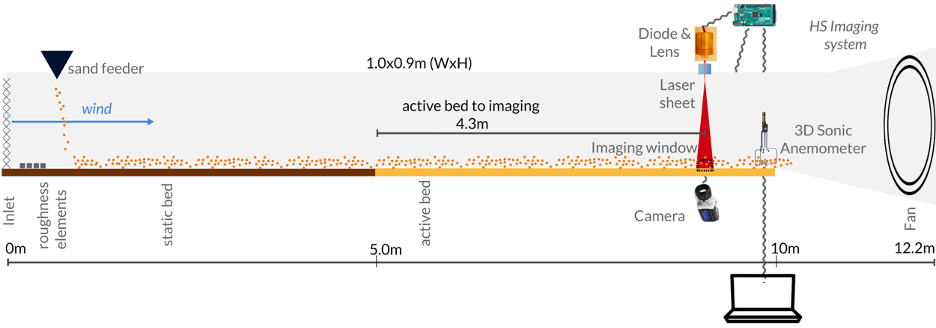
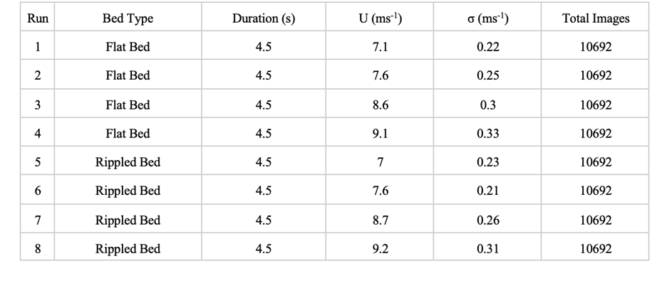
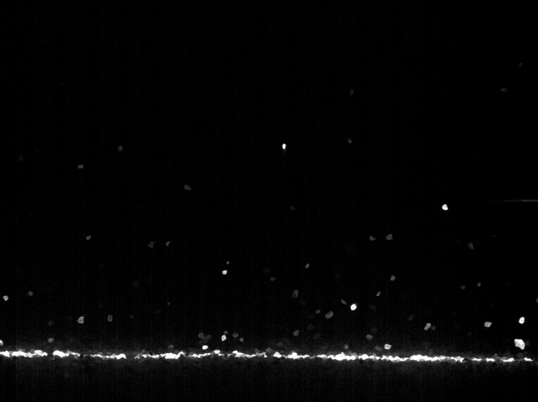

Datasets
PTV Analysis (Saltation Cloud)
PTV analysis was conducted on eight different experimental runs from high-speed imagery. The tunnel freestream wind velocity was controlled to range from approximately ~7.0 to 9.0 ms-1. This range was selected to incorporate experimental data from just above static (impact) fluid threshold conditions to higher transport rates. The active bed section was modified to either be flat or have natural ripple development. Prior to image acquisition, the bed was flattened for runs 1-4. For runs 5-8, the tunnel was allowed to run until the ripple form and migration speed had stabilized, approximately 10 minutes. All runs resulted in 10,692 images over approximately 4.5 seconds.
All measurements were taken towards the end of the active bed section, which is enclosed with plexiglass doors to allow for imaging and access to instrumentation. Downwind 9.5 m from the inlet, a side-mounted camera (Phantom Miro 341) captured sand particle motions in the horizontal and vertical directions. Image dimensions were 1024x768 pixels with a spatial resolution of 168:1 pixel to cm and were collected at 2353 fps. The sampling period was selected to balance data storage limits and resolution needs. The number of images recorded in a single run was 10,692 over a 4.5-second duration, which was the maximum the instrument's onboard memory would allow for the given resolution.
The HS camera captured particles illuminated by a laser sheet from a 7-watt laser diode (nubm44-v2 450 nm) and a 5-degree Powell Lens (Laserline Optics). The sheet covered the entire length and height of the imaging window. Using a ruler, we measured the laser sheet width to be approximately 0.2 cm but estimated its effective illumination width to be 0.3 cm due to increased scattering at the bed. An Arduino board was used to synchronize the timing of the laser sheet and camera capture.
Here is a link to download the original image sequences from the 8 runs.


